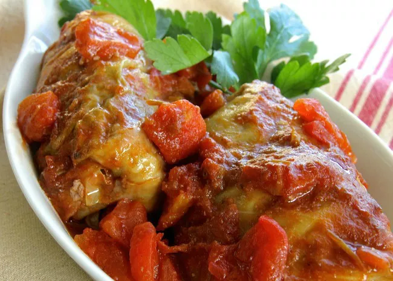

Golabki

Cabbage rolls in tomato sauce
Golabki are Polish cabbage rolls. They are usually filled with rice and minced
pork or beef, and are served in a tomato sauce. This recipe is very simple yet
results in a brilliantly tasty dish.
Ingredients
- 1 head cabbage, cored
- 2 tablespoons butter
- 1 large onion, chopped
- 450g minced pork
- 225g minced beef
- 350g cooked rice
- 1 teaspoon finely chopped garlic
- 1 teaspoon salt
- 1/4 teaspoon ground black pepper
- 300g can condensed tomato soup
- 350ml tomato juice
- 117g ketchup
Steps
- Bring a large pot of lightly salted water to a boil. Place cabbage head
into the pot, cover, and cook until leaves are softened enough to remove from the
head, about 3 minutes. Remove cabbage from the pot and let sit until leaves are
cool enough to handle, about 10 minutes.
- Remove 18 whole leaves from the cabbage head, cutting out any thick tough
center ribs. Set whole leaves aside. Chop the remaining cabbage and spread it in
the bottom of a casserole dish.
- Melt butter in a large skillet over medium-high heat. Add onion and sauté
until tender, 5 to 10 minutes. Remove from the heat and let cool, about 5 minutes.
- Combine beef, pork, cooked rice, garlic, salt, and pepper in a large bowl.
Add onion and mix until well combined.
- Preheat the oven to 175 degrees C.
- Place about 120g pork mixture onto a cabbage leaf. Roll the leaf around
beef mixture, tucking in the sides to create an envelope around the meat. Repeat
to make remaining cabbage rolls. Place cabbage rolls in a layer over chopped
cabbage in the casserole dish. Season with salt and pepper.
- Whisk condensed soup, tomato juice, and ketchup together in a bowl; pour
over cabbage rolls and cover the dish tightly with tin foil.
- Bake in the preheated oven until cabbage is tender and meat is cooked
through, about 1 hour. Uncover for the last 20 to 30 minutes of cooking. An
instant-read thermometer inserted into the center should read at least 70 degrees C.
- Enjoy!